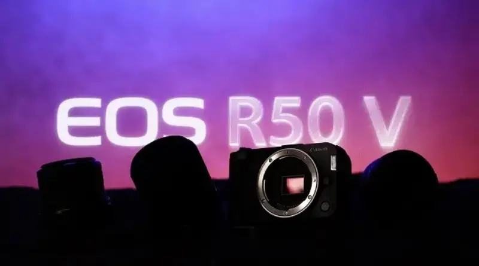
It is an excellent camera, and even more a dream kit for a beginner video creator.
People say photography is subjective, and the photographer decides whether a photo is good.
But sometimes the gear can really act back on the photographer, especially in a subject or field where the photographer was not good before. In recent years, with the rise of phone photography, I often joke with friends that after using some new phone, I feel I can shoot portraits, or that after using another phone, I can shoot the stars. (Of course, I still shoot with a camera too.)
Aurora, stars, and a volcano
EOS R5 Mark II - RF15-35mm F2.8 L IS USM
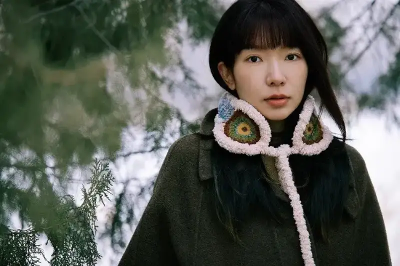
A portrait shot on a camera
EOS R5 - RF24-105mm F2.8 L IS USM Z
For someone who has been to many places and shot many photos, what is left that he cannot shoot? I think video may be the last field.
It is not that I cannot shoot video, but that some factors have long bothered me. After a little thought, I think they are the following:
1. Fear of video gear. I always feel that to shoot video, you have to carry a stabilizer, a slider, a monitor, and more.
2. Fear of video post-production, because it is completely different from photo color grading, and learning it from scratch is a hassle.
3. The mismatch between video gear and photo gear. I do not want to carry two sets of gear.
After I used the Canon EOS R50 V, these problems began to be solved one by one.
This is not my first time with the EOS R50 V. From the unboxing video at launch to later tests of its photo functions, I have shot a good amount of material with it. This time, I finally had the chance to really use it and feel the fun of video.
Yes, the fun.
It is not that it is unprofessional. I just feel that today most gear is more professional than a user needs. What is easy and what is fun is what matters to me and to most users.
1
Removing the fear of gear
— The way you choose a lens is completely different from photography
With my old way of thinking for photos, if you asked me to choose between an F1.8 lens and an F4 lens, I would choose F1.8. If you asked me to choose between a prime and a zoom, I would most likely choose the prime.
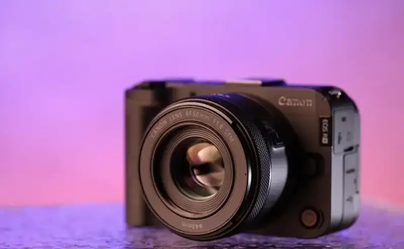
The RF50mm F1.8 STM on the camera
This is right for photos, but it may not be reasonable for video.
For this shoot with the Canon EOS R50 V, I used three lenses:
- RF50mm F1.8 STM
- RF-S14-30mm F4-6.3 IS STM PZ
- RF-S10-18mm F4.5-6.3 IS STM
The cheapest, the RF-S14-30mm, is the kit lens for the EOS R50 V, and the online price for a used one is under 1000 yuan. The other two are a little more expensive, but both are around 1500 yuan.
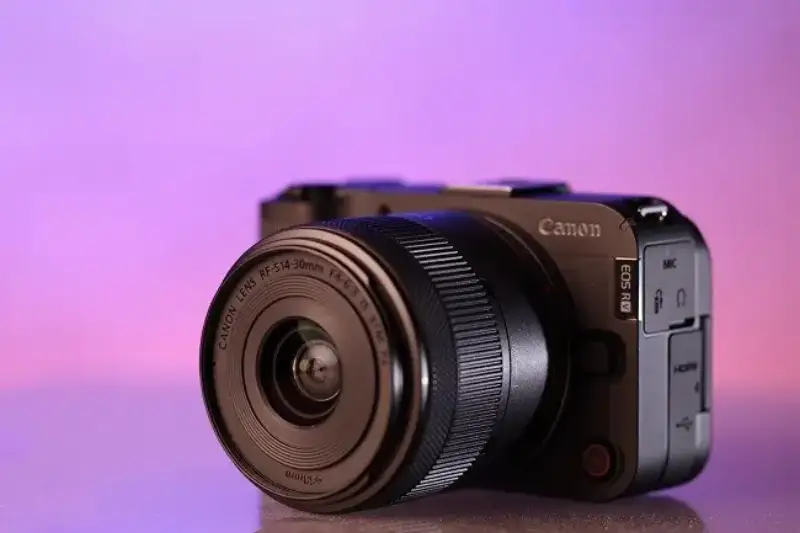
The power-zoom kit lens
RF-S14-30mm F4-6.3 IS STM PZ
At first I put on the RF50mm F1.8 STM without hesitation, because it is a prime with a large aperture, and its equivalent focal length is 80mm, good for portraits.
I shot many portraits I liked with it, but as I went on, I felt something was off. I wanted to shoot while walking, without a stabilizer, the hand-held kind of walking shot.
As I said before, I did not want to shoot video because I did not want to carry extra gear like a stabilizer. So for this shoot, I wanted to do as much as possible by hand.
In this process, I found that the Enhanced image stabilization of the EOS R50 V is very effective. With the RF-S14-30mm F4-6.3 IS STM PZ lens in particular, the lens and camera work together for stabilization, and the result is excellent.
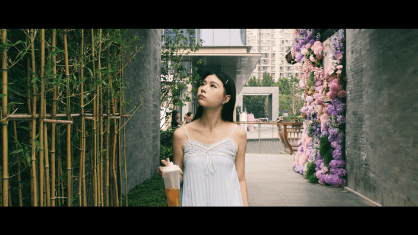
Shot on the EOS R50 V with the RF-S14-30 and stabilization on
By contrast, the other two small-aperture zooms, which I did not think much of, both have optical IS, and together with the in-body stabilization of the EOS R50 V, give a very stable image.
Especially with Enhanced stabilization on, those two zooms let me shoot hand-held walking video that looks as if I had used a stabilizer or a slider.
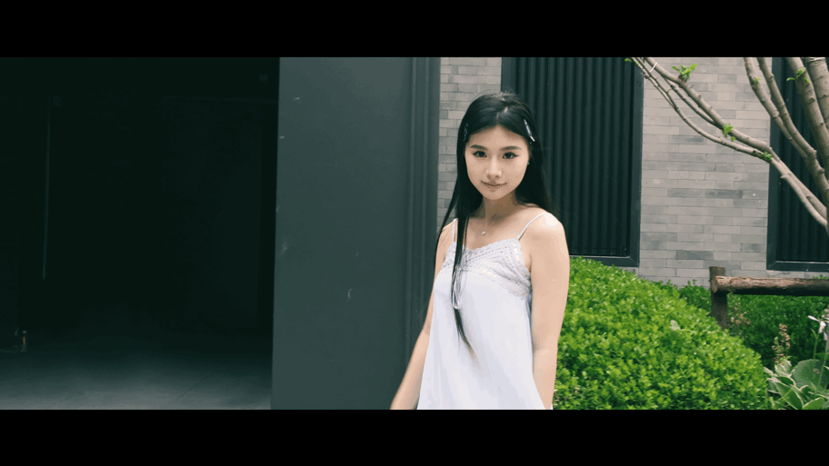
The Enhanced stabilization that rivals a stabilizer
Shot on the EOS R50 V with the RF-S14-30
Although Enhanced mode crops some of the field of view, these two lenses have plenty of view to spare. The RF-S10-18 needs no introduction. It is a tiny lens equal to 16-29mm on full frame, and it is absurdly small. I could even fit it in a cup.
The other, the RF-S14-30mm F4-6.3 IS STM PZ, is also 4mm wider than the old 18mm kit lens, for an equivalent 22.4-48mm.

The very compact RF-S10-18mm F4.5-6.3 IS STM
So this focal length, on one hand, leaves room for the in-body Enhanced stabilization to crop. On the other hand, because video itself moves the camera, after cropping I can still show the width of the frame through pans and turns. The field of view is not the only right choice.
Using the RF-S14-30mm F4-6.3 IS STM PZ, I also shot many closer moving shots in a cafe. If I did not say, you would think they were shot on a stabilizer, but they were really hand-held.
Result with stabilization off
Result with stabilization on
I even handed this combination to a model with little shooting experience for a selfie, and the image was still stable and fully usable.
Of course, if you, like me, also bring a small tripod, you can turn off stabilization completely and enjoy the ultra-wide 16mm equivalent view.
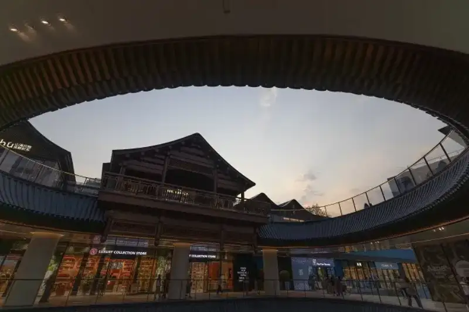
A photo shot at the 16mm equivalent
RF-S10-18mm F4.5-6.3 IS STM
Then do not forget to set the video resolution to 4K 30P, because with this lens the EOS R50 V oversamples from 6K, and the detail is maxed out.

A video frame shot at the 16mm equivalent
RF-S10-18mm F4.5-6.3 IS STM
Likewise, if you do not need to move and just shoot a fixed-camera video of a person, you can use the RF50mm F1.8 STM for 4K 30P video, because the uncropped view gives better distance and depth of field.
A video frame shot with the RF50mm F1.8 STM
So the biggest feeling from shooting with the Canon EOS R50 V is not only how strong the camera itself is, but also a change in my whole idea of vlog creation.
I can forget the settings and the old rules, and shoot smooth, stable video by hand, without a stabilizer or a slider.
In fact, this camera has many thoughtful extra touches, such as:
1. The vertical screw hole and the grip. You can shoot for a long time without tiring, and you save an L-bracket.
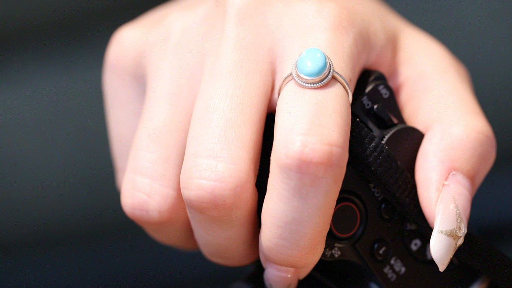
2. The zoom lever. With a zoom lens, you can even shoot a dolly zoom.
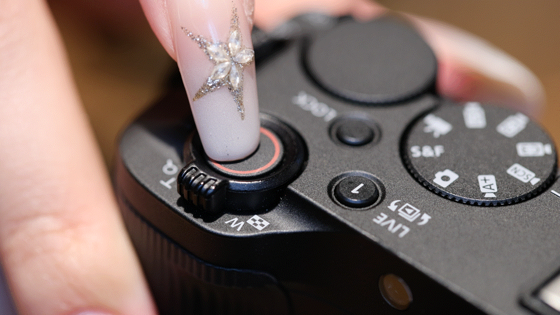
3. The mode dial. The fastest way to reach a shooting mode is still the dial.
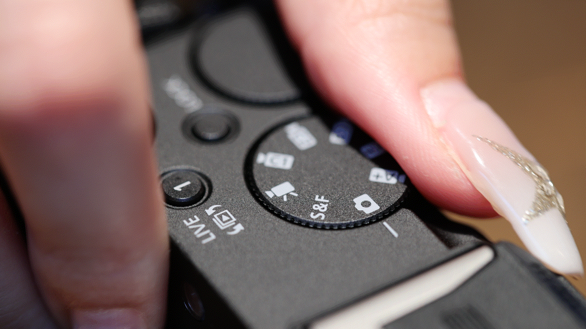
4. The front record button, the flip screen, and the video record lamp. They make selfies easy, and let me check the record state at any time, so I avoid the embarrassment of missing a shot.
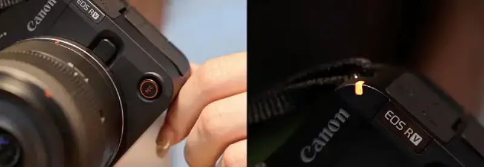
The first reason that kept me from shooting video is solved. Now for the second.
2
The color grading is done while you shoot
— Rich in-camera picture styles and filters
Color grading is a chore for me even with photos. My photos have a distinctive color, but most of that comes from what I planned while shooting, and then I reproduce it, according to what I planned, through different software or apps.
But video color grading is a field I do not know at all, and learning it from scratch costs time and money. In this, the Canon EOS R50 V gave me three treats:
Let us talk about them one by one.
2.1 Video beauty: Smooth Skin movie, where sharpness is not the first priority
Even for photos, handling portrait skin is not easy, and video can be seen as a continuous string of photos. So an in-camera option to improve skin clearly saves a lot of work.
On the Canon EOS R50 V, the new Smooth Skin movie mode is available in the SCN scene mode, and you can choose a level from 1 to 5 (the default is 3).
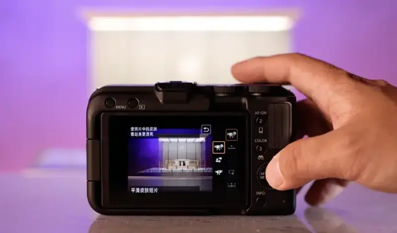
I made a simple comparison between the default level and the mode off. You can see the image becomes softer, which helps cover some small blemishes on the model's skin.
Shot directly with the default setting
Shot in Smooth Skin mode at level 3.
Of course, while the skin is smoothed, the fine detail in the frame also blurs a little. I feel that, for a video with a person as the subject, the default level 3 is acceptable. If you want a more professional treatment of video portrait skin, you probably would not use this mode anyway.
By the way, below the Smooth Skin movie mode is the Close-Up Demo movie mode. It suits videos such as product live streaming. It can focus on an object that suddenly comes close, instead of always focusing on the person's eyes.
I also asked the model to demo this. You will find that this mode also works well in vlog shooting, and it enriches the ways the film can express itself.
2.2 Color filters + 2.3 Cinematic ratio
I want to talk about these two treats together, because I like to use them together.
The EOS R50 V has 14 built-in filters, and all of them can be used with the 2.35:1 Cinema View on.
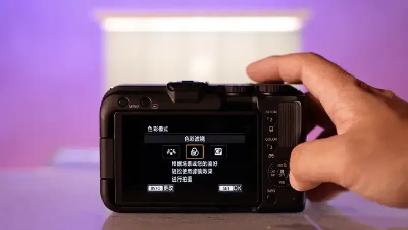
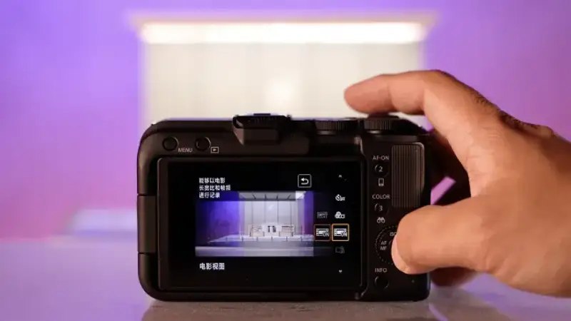
Together they form a unique way to shoot a cinematic frame without color grading in post.
For the actual result, look at these frames from the video:

A video frame with the Story Teal and Orange filter
A video frame with the Story Blue filter
Like my choices when shooting photos, in video I like to use Story Teal and Orange from the COLOR filter system for frames with a person. It has a bit of a Hong Kong feel. Story Blue suits outdoor scenes with buildings or wide spaces, or indoor scenes that are already cool. Tasty Warm suits food.
Of course, I also tried more effects this time, which I will talk about later.
2.4 Hidden features: find the main subject, and zoom slowly
There are two more points about video. They have little to do with color grading, but I feel they both raise shooting efficiency. They are Registered Priority Subject and Lens Optical Zoom Speed.
The first can recognize and select a person's face from a photo you have already taken, and register it. Obviously, I registered the face of the model who is the main subject of this video.
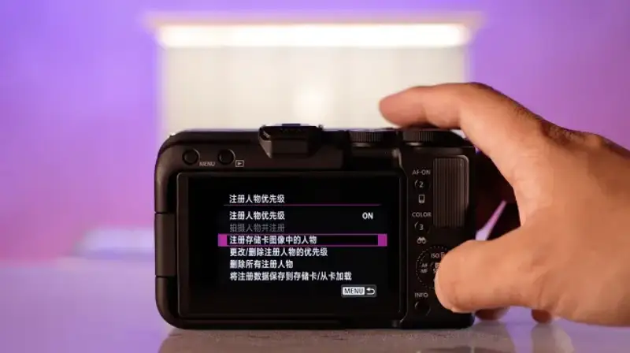
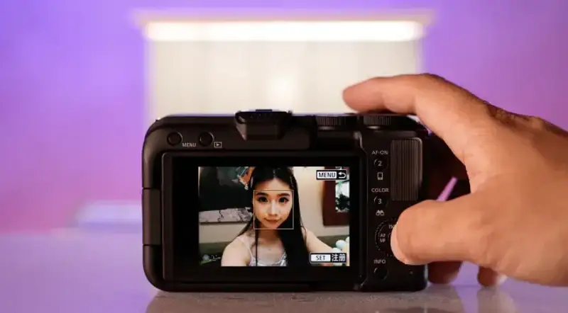
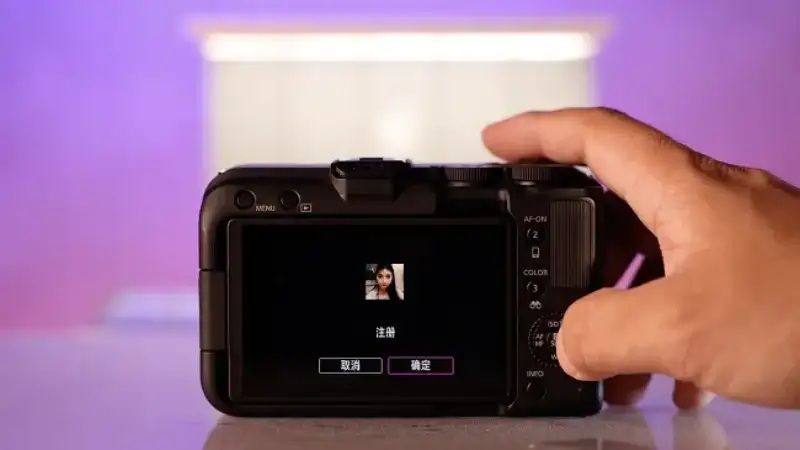
The benefit is that, when shooting a scene with many passersby, such as a street, the EOS R50 V can always automatically find and focus on the registered model, and will not focus on a random passerby.
GIF: a tricky, high-difficulty face-recognition focus test.
Shooting a vlog on a busy street, such a smart feature clearly saves me a lot of worry.
Besides, the Lens Optical Zoom Speed feature controls the zoom speed of a power-zoom lens such as the RF-S14-30mm. In practice, when you turn the zoom ring on the lens or the lever on the camera, the camera zooms faster or slower according to your setting.
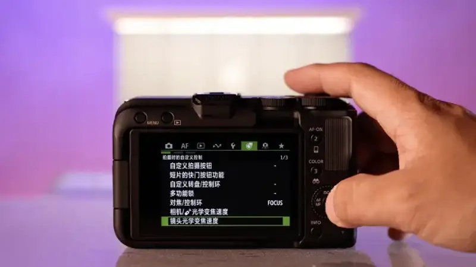
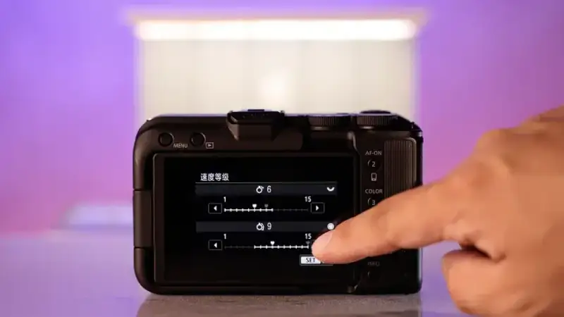
The power-zoom speed setting screen
The top is the speed for a light press, and the bottom is the speed for a firm press.
This helps both the dolly zoom when shooting a person and the push-in effect when shooting a scene. You can set the speed fully to the effect you want.
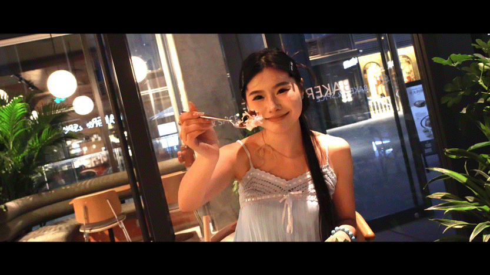
A dolly-zoom effect shot with a slow, smooth power zoom
This is the thoughtfulness of the EOS R50 V. I do not think I will use some of the features often, but when I need one, it is there waiting for me. That feels very good.
3
A two-in-one experience
— It is also a great camera for photos
I just mentioned that this camera has 14 filters. They work for video, and of course they work for photos. This time, in a cafe, I tried portrait filters such as Bright White, Clear Light Blue, Clear Purple, and Clear Amber.
The Bright White filter
The Clear Light Blue filter
Unlike the strong contrast of the Story series, the Clear series is much softer, and suits a different expressive style.
In fact, because the EOS R50 V has so many filters, it can be an everyday carry camera, and not only a vlog video camera.
When shooting photos, the three lenses I used this time each showed their own traits.
- RF-S10-18mm F4.5-6.3 IS STM. It may be the most underrated RF-S lens. It is very small and light, only 150g, yet very wide. It will not be a burden when you carry it out, and it only brings surprises.
A frame shot with the RF-S10-18mm F4.5-6.3 IS STM under a lotus leaf
- RF-S14-30mm F4-6.3 IS STM PZ. Besides the 14mm wide end and the strong stabilization mentioned above (the lens alone gives about 5 stops of stabilization), it also has a minimum focus distance of 0.15m at the 30mm end, for a magnification of 0.38x. It is perfect for food detail.
A macro result shot with the RF-S14-30mm F4-6.3 IS STM PZ
- RF50mm F1.8 STM. Its rising price shows its value. This lens gives photos with beautiful background blur, and it is a good entry choice for portraits.
The large bokeh of a portrait shot with the RF50mm F1.8 STM
Also, as I mentioned in earlier articles, the EOS R50 V supports bird-eye and vehicle recognition, and it has Canon's famous strong tracking stability and ability.
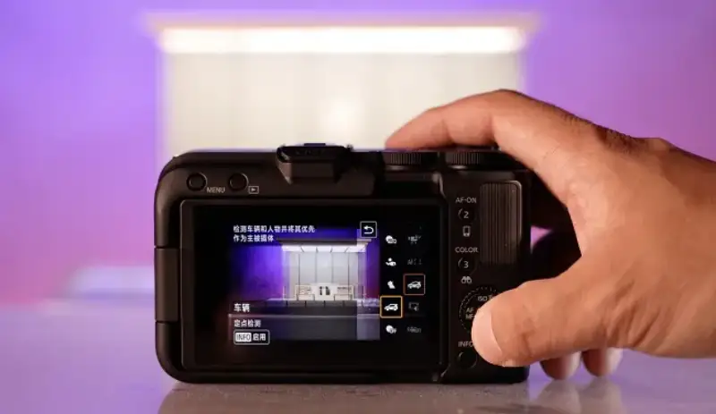
So overall, this camera is really comprehensive. It is not only a vlog camera, and it can meet many creative needs.
Rabbit's summary:
A dream kit for beginner video?
In my view, a dream kit usually comes in two kinds. One has specs that are especially strong and lead an era, such as very high pixels or a very large sensor, such as the Canon EOS R5 and R5 Mark II, which can shoot 8K video.
The other is highly human-centered. It meets everything the user needs, and in many places the user would never think of, it has already designed a very useful feature, such as the EOS R50 V this time.
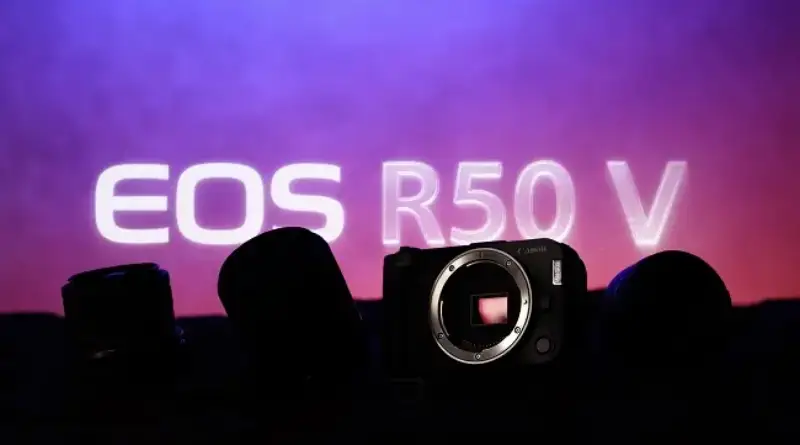
The APS-C sensor and the RF mount are the foundation of this camera
From its design, this camera felt fresh to me. It is different from all Canon models before it. It breaks many of the old rules of Canon cameras in function and design, such as the screw hole in the grip, the rounded shape, the built-in filters, the smooth-skin video, and the slow-and-fast S&F mode.
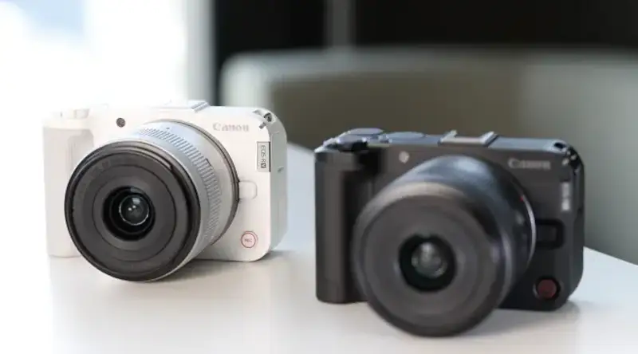
The rounded shape, in black and white, makes this camera very recognizable.
These advances in function and design show, on one hand, Canon's understanding and grasp of the market, and on the other, that this imaging brand still has the drive and ability to innovate. That is why I am optimistic about the EOS R50 V.
Of course, this camera also has its shortcomings. But for me, its performance has already convinced me that carrying it every day for creative vlog shooting is a very easy and fun thing. So it can truly be called an all-in-one carry camera for both video and photos.